Marcador y eventos
Consulta el marcador, el minuto de juego y los eventos importantes del partido en tiempo real desde el móvil.
Sigue a tus equipos, recibe los eventos importantes del partido y, si estás en el campo, participa como cronista. Vive cada partido aunque no puedas estar allí.

SportDat conecta a seguidores, cronistas y clubes alrededor del partido, de forma sencilla y respetuosa con la comunidad.
Consulta el marcador, el minuto de juego y los eventos importantes del partido en tiempo real desde el móvil.
Los cronistas narran los eventos principales de forma rápida y estructurada, sin complicaciones y desde el propio campo.
Activa tus equipos favoritos y mantente al día de sus partidos narrados durante toda la temporada.
Recibe avisos de los momentos destacados: goles, descansos, final de partido y otros eventos importantes.
SportDat genera información útil sobre resultados, evolución del equipo, estadísticas básicas y clasificación durante la temporada.
La inteligencia artificial ayuda al cronista a enriquecer la redacción de los mensajes del partido, haciéndolos más claros y cuidados, sin exponer información innecesaria de los jugadores.
Desde preparar la alineación y narrar cada jugada hasta seguir la crónica, recibir avisos y consultar las estadísticas. Descubre cómo se vive un partido con SportDat.
Pulsa cualquier captura para verla ampliada.
La página de inicio es el punto de entrada a la información que te interesa de tu equipo. Sus tarjetas reúnen lo que viene, lo que está pasando y cómo evoluciona el equipo durante la temporada.
Próximos partidos y crónicas en directo. Consulta los próximos encuentros e identifica los que están siendo narrados en tiempo real para entrar en su crónica y seguir el partido.
Último resultado y evolución. Revisa el último partido jugado y la racha de los últimos encuentros para ver cómo llega tu equipo a la siguiente jornada.
Clasificación y estadísticas. Encuentra la posición de tu equipo en la competición y sus principales datos estadísticos. Desde cada tarjeta puedes ampliar la información y acceder al detalle correspondiente.

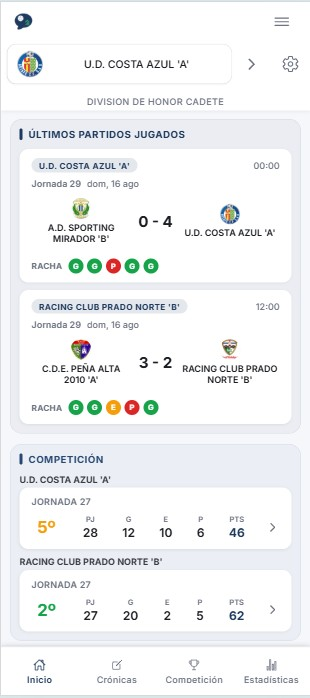
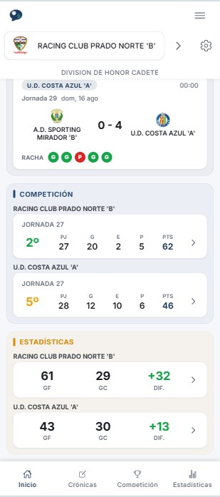
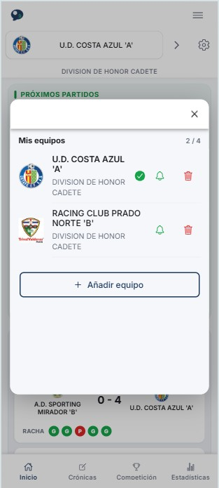
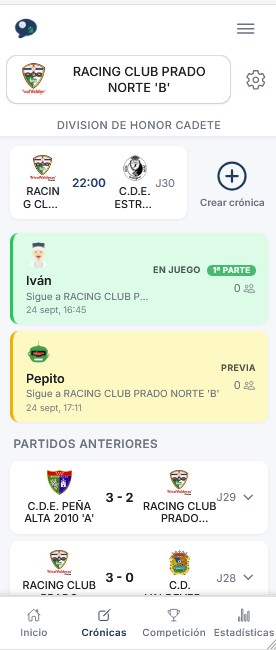
Añade los equipos que quieres seguir y consulta sus próximos encuentros. En la vista de crónicas puedes ver las disponibles para un partido y distinguir tu propia crónica de las de otros cronistas.
Si vas a narrar desde el campo, prepara tu crónica. Si prefieres seguir el encuentro, entra en una de las crónicas disponibles.
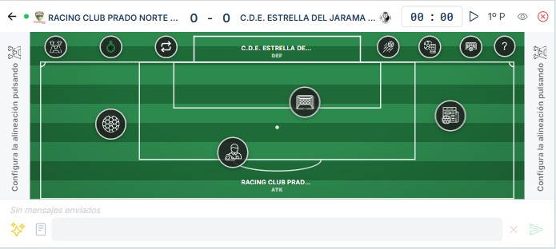
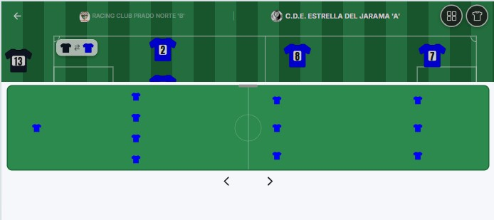
La pantalla de creación reúne el campo, el marcador, el reloj y los controles de narración. Antes de empezar, configura la formación, la equipación y los jugadores para identificar a los protagonistas de cada acción.
También puedes guardar una alineación y cargar una de las que ya tienes disponibles. Durante el partido, la vista de alineación permite gestionar las sustituciones.
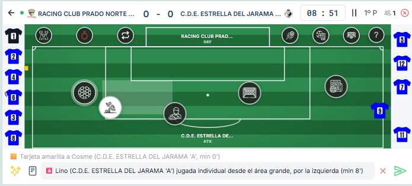
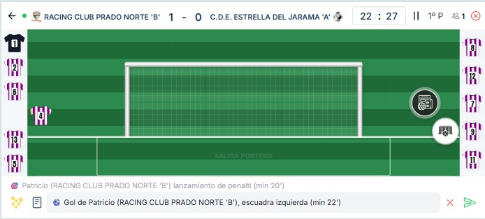
Marca el comienzo de la primera parte y registra las acciones desde el campo de juego. Puedes indicar cambios de posesión, pases, centros al área, remates, goles, paradas, fueras de juego, tarjetas y penaltis.
Añade el contexto de la acción, como el jugador o la zona del campo. El mensaje aparece en la parte inferior de la pantalla para que puedas revisarlo antes de enviarlo a la crónica.
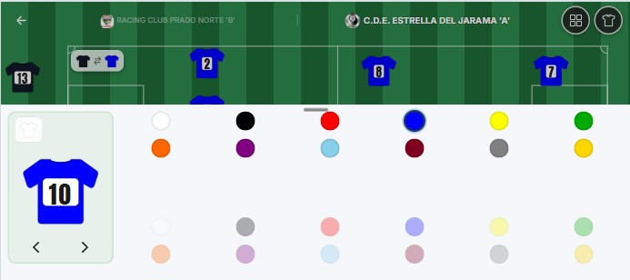
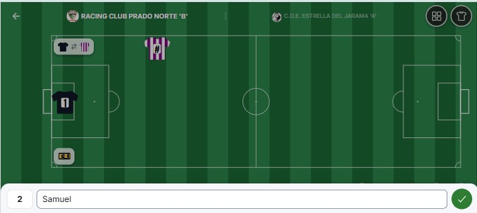
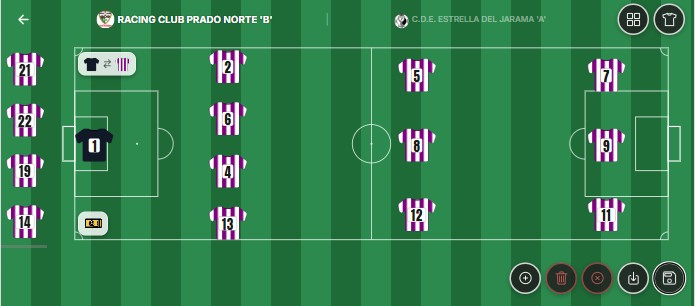
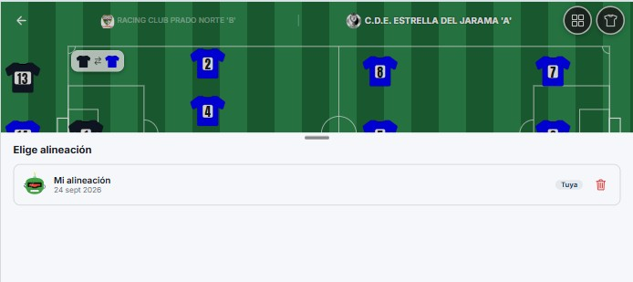
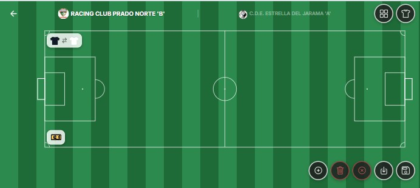
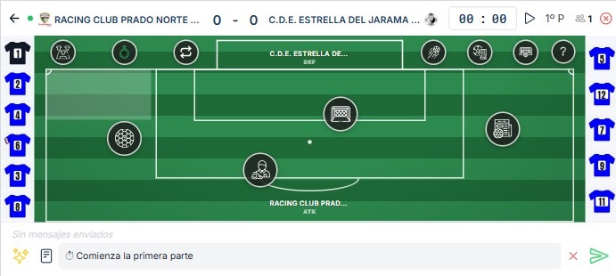
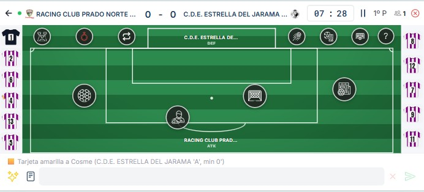
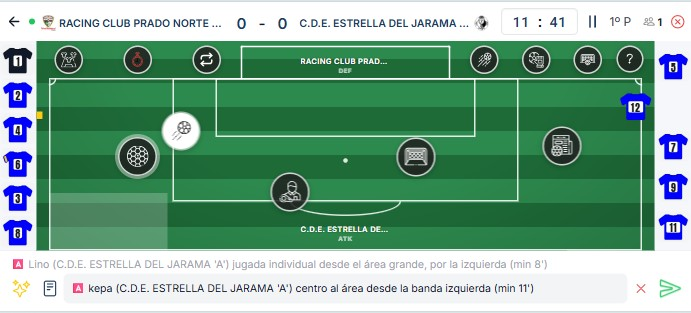
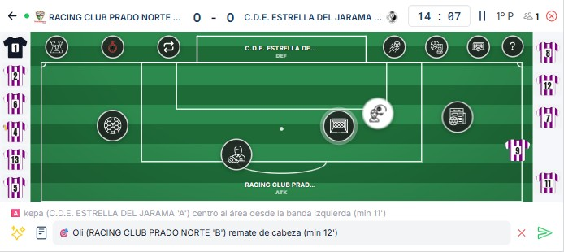
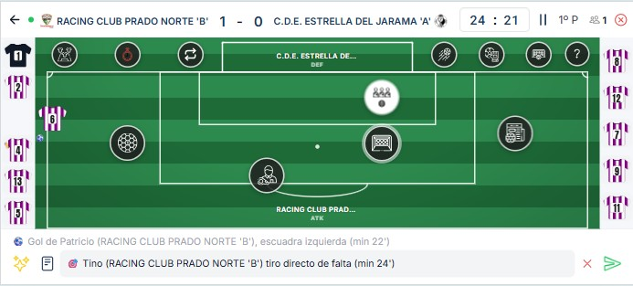
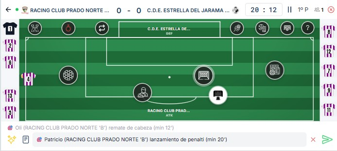
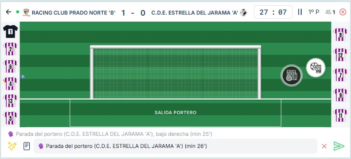
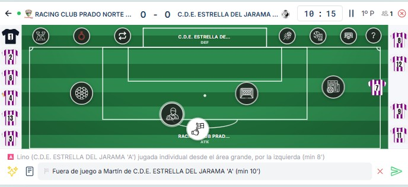
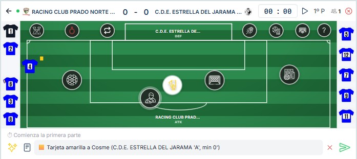
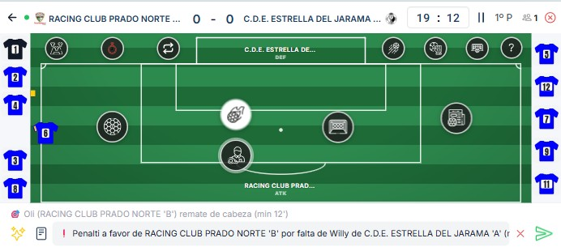
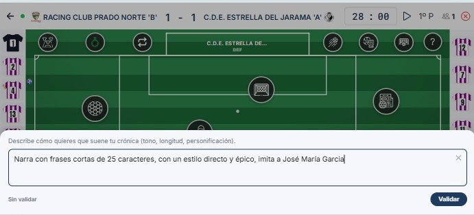
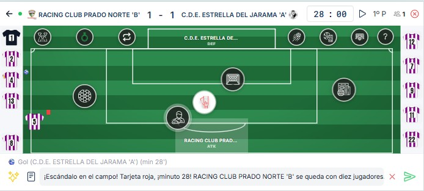
Configura las instrucciones de redacción para orientar el tono y la extensión de los mensajes. La IA ayuda a convertir los datos de la jugada en un comentario más elaborado para quienes siguen el encuentro.
Revisa el texto propuesto antes de enviarlo y mantén una narración clara, deportiva y respetuosa con los participantes.
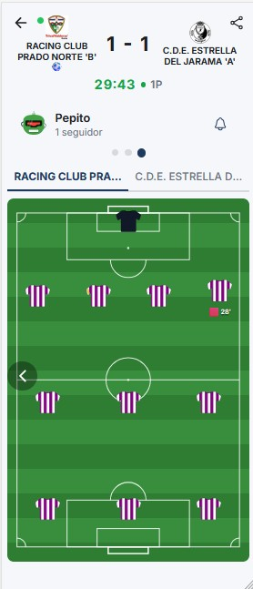
Abre la crónica del partido para consultar el marcador, el tiempo de juego y la secuencia de comentarios. Las acciones registradas por el cronista permiten seguir lo que está pasando aunque no puedas estar en el campo.
Consulta el resumen para repasar las jugadas representadas sobre el campo y las estadísticas de la crónica para comparar la actuación de los dos equipos.
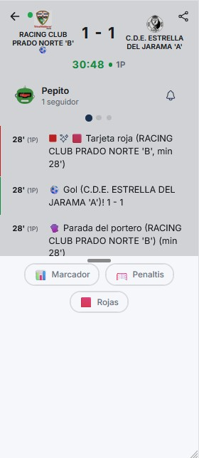
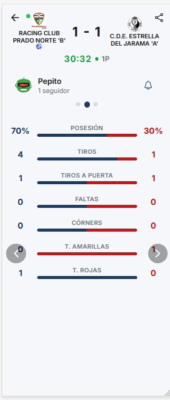
En la configuración de notificaciones de la crónica puedes ajustar los avisos del seguimiento. Así eliges cómo mantenerte al tanto mientras se desarrolla el encuentro.
La pestaña de estadísticas reúne los datos de las acciones registradas, como posesión, pases y remates. La información disponible depende de lo que se haya recogido en la crónica.
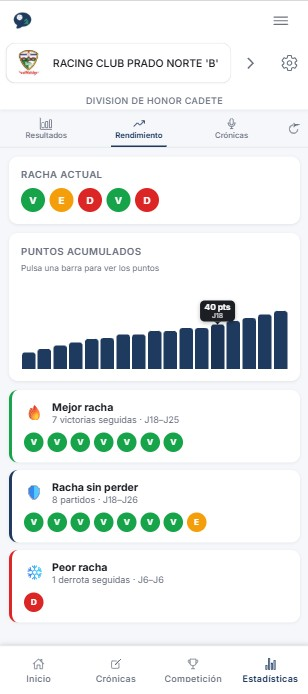
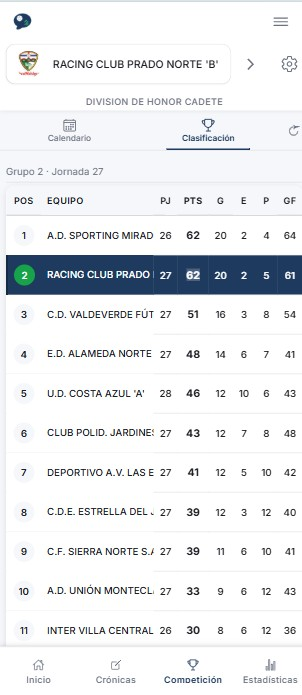
El seguimiento continúa más allá de cada crónica: revisa los resultados, la evolución del equipo, el calendario y la clasificación de la competición desde las distintas vistas de SportDat.
Combina la información del partido con la perspectiva de la temporada para estar cerca de tus equipos cada jornada.
SportDat apuesta por una narración deportiva sencilla, útil y responsable. La app está diseñada para facilitar el seguimiento de partidos evitando la exposición innecesaria de datos personales y promoviendo un uso respetuoso de la información del juego.
Vídeos cortos para seguidores, cronistas y clubes.
SportDat ayuda a que los partidos tengan más seguimiento, incluso cuando los aficionados no pueden estar físicamente en el campo.
Cada comentario, gol o aviso mantiene conectada a la afición con el equipo, aunque sea de forma virtual durante el partido.
Refuerza la relación entre seguidores y equipo con un canal sencillo para vivir los partidos y su evolución.
Facilita que quienes no pueden asistir sigan el partido y se mantengan cerca del equipo cada fin de semana.
Aumenta el interés por la evolución del equipo con resultados, estadísticas y clasificación durante la temporada.
La herramienta permite buscar seguidores y cronistas dentro del entorno del club de forma ordenada y respetuosa.
Los clubes pueden probar SportDat con uno o varios equipos y presentar la app a su afición mediante una demo.
Podemos organizar una demo para enseñar cómo funciona la app, resolver dudas y valorar una prueba piloto con uno o varios equipos.
Usaremos tus datos únicamente para responder a tu solicitud y gestionar la posible demo o piloto de SportDat.
App gratuita en esta fase inicial. Empieza a seguir a tus equipos o preséntala en tu club.